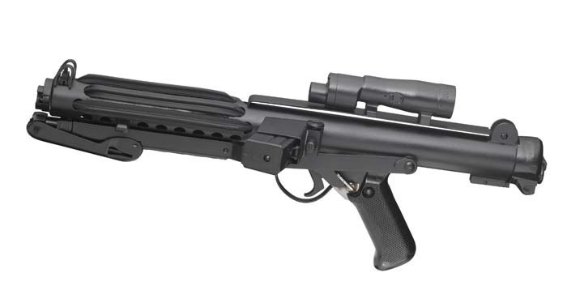
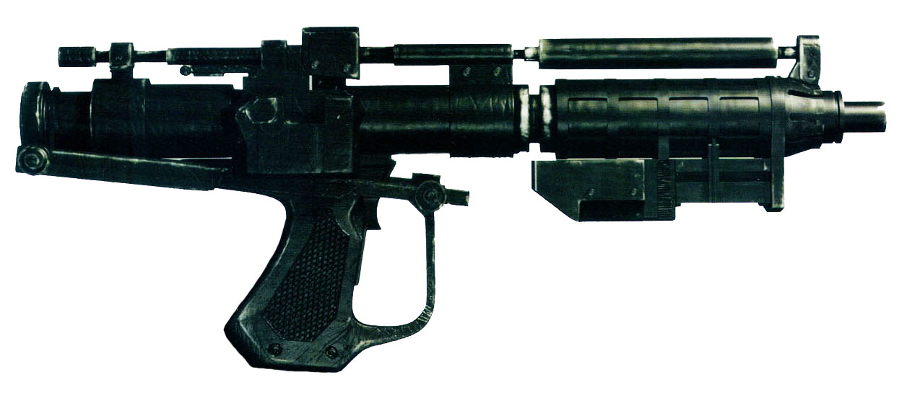

En esta página podréis encontrar información sobre distintos tipos de armas, algunas características y su historia. La información ha sido extráida de varias fuentes de internet, entre las que se encuentran la StarWars Wiki la Wikipedia y una enciclopedia del universo de Star Wars.
La información está clasificada en dos grandes grupos: Imperio o Rebelión según a qué facción pertenezcan los diferentes ítems.
-
Estrella de la Muerte I
Apariciones
II, III, IV Filiación
Imperio Antes incluso de su nacimiento, el Imperio ya construye su arma definitiva. En Geonosis, los ingenieros al servicio del lord Sith Darth Sidious crean los primeros bocetos de la Estrella de la Muerte. Cuando los caballeros Jedi y los soldados clon atacan el planeta y comienzan las Guerras Clon, el conde Dooku arrebataa a los Sith los bocetos de seguridad. Antes del fin de la guerra y de la proclamación de Sidious como emperador, la construcción de la estación ha comenzado en secreto, bajo la supervisión del almirante Tarkin. Dos décadas después, el gran Moff Tarkin, dirige la Estrella de la Muerte cuando borra del mapa el pacífico mundo de Alderaan.
El Bloque de detención AA-23
Entre las muchas dependencias de la Estrella de la Muerte, hay un bloque de detención de prisioneros para los interrogatorios, las detenciones pendientes de traslado y las ejecuciones. Resulta imposible acceder a él mediante ataque directo, de modo que Han y Luke se visten con armaduras de stormtrooper y entran como si nada, fingiendo escoltar a un prisionero wookie recién llegado, Chewbacca, hasta una de las celdas. Una vez dentro, Chewbacca les ayuda derrotar a los guardias y rescatan a la princesa Leia de su celda. Atrapada en el pasillo por los soldados, Leia revienta una rejilla y salta... al fétido triturador de residuos de la estación espacial.
El tamaño no importa
La Estrella de la Muerte viene equipada con un súper rayo láser capaz de destruir planetas enteros de un solo disparo, sin embargo, Luke SkyWalker y el escuadrón Rojo son capaces de colarse por las trincheras de su superfície y colar dos torpedos de protones en un pequeño conducto de escape térmico que provocaron una reacción en cadena capaz de destruir la super estación espacial. Gracias a Disney, ahora sabemos que el genio que diseñó este fallo a propósito fue el ingeniero Galen Erso, hija del cual daría su vida por robar los planos de la Estrella de la Muerte.

-
Bláster E-11
Apariciones
IV, V, VI Fabricante
Industrias BlasTech Modelo
E-11 Tipo
Fusil bláster de las tropas de asalto El BasTech E-11 es el arma reglamentaria de las tropas de asalto imperiales. Esta arma combina una potencia de fuego letal, con un gran alcance y un diseño versátil. El componente más visible es la mira telescópica y la culata de tres posiciones, lo que convierte este bláster del tamaño de una pistola en un fusil estándar. Las células de energía estándar permiten realizar unos cien disparos, y los cartuchos de plasma, mas de 500. Los soldados llevan los recambios de las células y los cartuchos en el cinturón, y el bláster cuenta con un sistema de refrigeración para mejorar su rendimiento.

-
Bláster droide E-5
Apariciones
I, II, GC, III Fabricante
Talleres de Blindaje Blaktoid Modelo
E-5 Tipo
Fusil Bláster El armamento estándar de los droides de batalla B1 y los droides comando de la serie BX es el fusil bláster E-5, un arma ligera con una gran cámara de gas que realiza unos potentes disparos. Basado en un diseño de BlasTech, los talleres Baktoid lo sometieron a un proceso de retroingeniería para ser usado por droides que no sienten el calor generado tras repetidos disparos.
